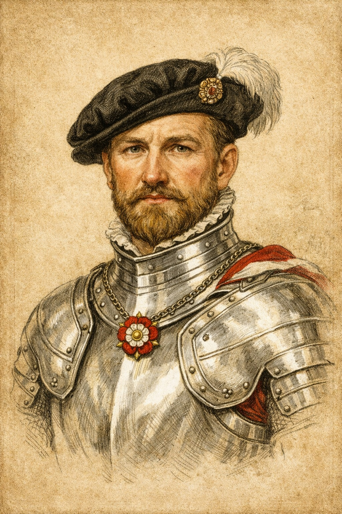
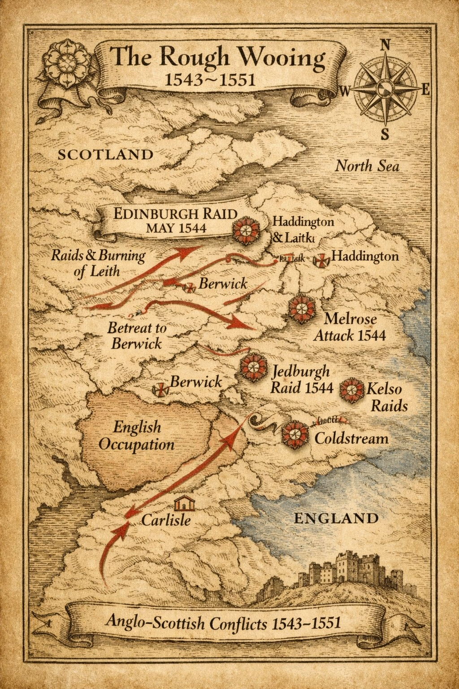
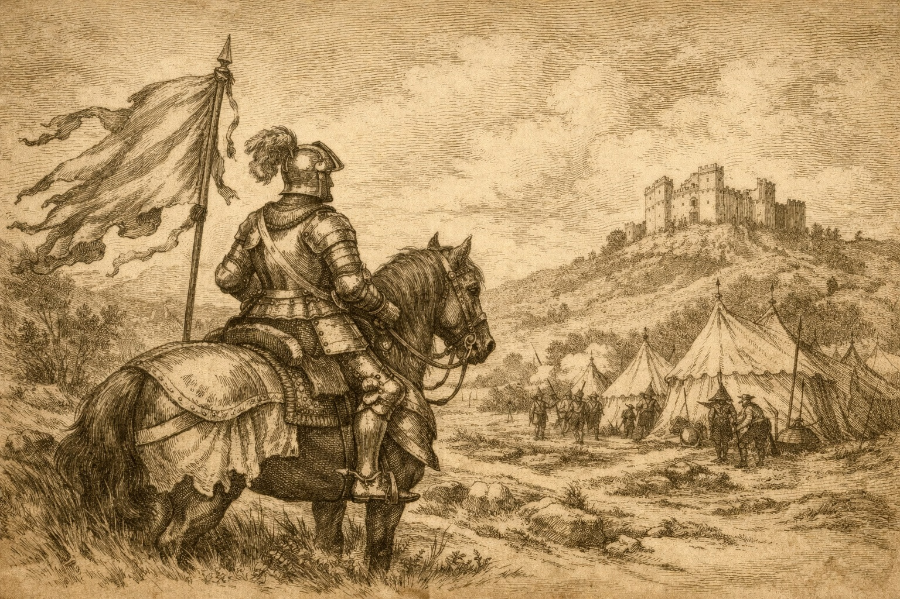
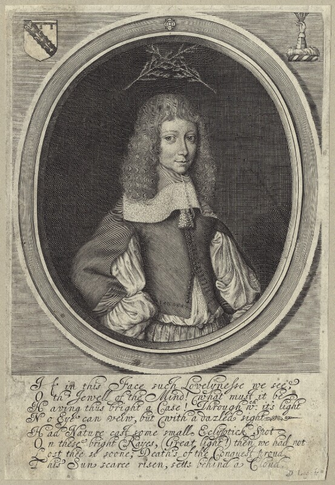

Sir Thomas Holt — silver armour portrait.
Sir Thomas Holt of Gristlehurst was a mid‑Tudor Lancashire landowner whose family held long‑established estates in the townships of Bury and Spotland. He was knighted on 11 May 1544, during the reign of Henry VIII. His knighthood coincided with the opening phase of the Anglo‑Scottish campaigns known as the Rough Wooing (1543–1551). Although no surviving record identifies his specific service, the timing places him among the Lancashire gentry active in Tudor military affairs. He was born around 1500 and was the son of Ralph Holt and Anne Langley (the daughter of John Langley of Agecroft). He married Dorothy Longford, daughter of Sir Ralph Longford of Derbyshire.
The Rough Wooing (1543–1551)
The Rough Wooing was a series of campaigns launched by Henry VIII and continued under Edward VI to secure a marriage the infant Mary, Queen of Scots, and Prince Edward. The conflict involved raids and sieges along the Scottish border, including the Edinburgh Raid (1544), Melrose Attack, Jedburgh Raid, and Battle of Ancrum Moor (1545). These events formed the backdrop to Sir Thomas’s knighthood.
Key documented battles
| Battle / Siege | Year | Notes |
|---|---|---|
| Haddington | 1548–49 | Long English occupation; many knights served here. |
| Pinkie Cleugh | 1547 | Major English victory under Edward VI; likely site for knighthoods. |
| Kelso | 1545 | English raid; Lancashire contingents recorded. |
| Jedburgh | 1544 | English advance; gentry participation noted. |
| Edinburgh Raid | 1544 | Henry VIII’s initial campaign. |
Campaign Maps & Context
The maps and illustrations below provide historical context for the campaigns active during the period of Sir Thomas Holt’s knighthood. They do not attribute specific participation but show the military landscape of the time.

Campaign routes and battle sites of the Rough Wooing (1543–1551).

Tudor campaign landscape — evoking the military context of Sir Thomas Holt’s knighthood.
Sir Thomas Holt’s Legacy
Sir Thomas’s knighthood and his bequest of “all manner of artillery or harness as jack, sallet, white harness with my flag” to his son Francis reflect his martial status and Tudor heritage. His association with the Gristlehurst estate marks him as an early figure in the Holt family’s rise within Lancashire society.
John Holt (1647-1659)
Portrait from the National Portrait Gallery of John Holt (1647-1659), Son of Thomas Holt of Grislehurst by David Loggan. line engraving, published 1660. NPG Number: D29010 Licensed under creative commons.
